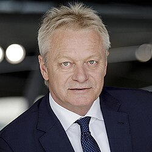

联邦制＋议会制＋比例代表制。六个机构读懂德国政治的骨架，每张卡片回答三个问题：它是谁、怎么产生、权力有多大。
全国唯一的联邦立法与预算机关，选举并监督总理。共 630 席，由混合比例代表制产生：一票选本选区直选候选人，一票投给政党，政党得票率低于 5% 不得进议院。它是唯一能倒阁的机关，但方式苛刻——必须先以多数票选出新总理，旧总理才算被罢免（"建设性不信任案"），这让德国战后极少出现政府突然垮台。
不是第二张选票选出的上院，而是 16 个州政府的代表会议：69 票按州人口分 3—6 票，州政府指派、可随时更换。凡涉及州行政、税收与教育的联邦法律（约占四成）必须经其同意，因此州政府实质上分享联邦立法权——这也是德国"合作式联邦制"的核心。
国家元首，礼仪性职位但握有两件真东西：法律签署权（可拒绝签署其认为违宪的法案）与最高的道德权威。由联邦大会——630 名联邦议员＋等额州代表共约 1260 人——选出，任期五年。
真正的政府首脑，掌握组阁权、"方针决定权"（所有重大政策由总理定调）与部长任免权。由联邦议院不经辩论直接选举产生。现任默茨（基民盟），2025 年 5 月 6 日就职，组成联盟党＋社民党"黑红大联合"。
联邦大选每四年一次，下次按规定不迟于 2029 年初（若执政联盟破裂可提前，政界已有此类猜测）。关键变量是 5% 门槛：得票不足即全部出局——自民党（4.3%）与瓦盟（4.97%）2025 年双双倒在门槛前，客观上放大了进入议院政党的席次。
16 个州各有宪法、议会、政府与法院体系，核心州权是教育文化、警务、地方自治（"文化主权"）。绝大多数联邦法律由州政府负责执行；州长会议（MPK）在联邦层面协调。联邦制意味着：看德国政局，必须同时看 16 张州级政治地图。
三张图看懂现状：联邦议院席位（2025 年 2 月大选产生）、最新民调（会变）、十六州执政版图（正在重组）。三者之间的落差，正是当下德国政治的张力所在。
怎么读这张图：西部仍由两大人民党分治——基民盟坐拥南部与西部工业带，社民党控制北部港口与鲁尔区；绿党守住巴符州汽车重镇，并已进入 6 个州政府。
东部是另一张地图：萨克森、图林根、勃兰登堡均为少数派政府勉强维持；萨安州与梅前州 9 月改选后，看守政府正与"反选择党联盟"赛跑——梅前州社民党＋左翼党＋绿党仅以 3 席优势组阁，萨安州选择党距绝对多数只差 3 席。
柏林是全局缩影：左翼党首次成为首都第一大党，红红绿组阁谈判因反犹争议一度中断，总理默茨罕见介入施压——德国的"防火墙"争论，如今在联邦与州两级同时燃烧。
按当前民调排序。每党一张卡片：一句话定性 → 民调与执政版图 → 来历与纲领 → 左右坐标与对华态度 → 代表人物。
1945 年由魏玛时期的天主教中央党与新教保守派合并而成，刻意跨教派、跨阶层，目标是把社会中间力量整合成一个"人民党"。阿登纳奠定西向绑定北约与欧共体，科尔完成两德统一，默克尔执政 16 年将其推向政治光谱正中。经济上主张减税、放松管制、重振制造业；社会议题偏保守；安全上亲美亲北约。默茨上台后试图右转夺回流失选民，却被选择党与绿党腹背受敌，梅前州甚至建党以来首次被挡在州议会门外。
务实主义：一面跟进欧盟"去风险"，一面维持对华经贸通道，2026 年中德高层互动频繁；党内亲工商翼主张淡化意识形态差异。
2013 年因反对救助欧元区而生，2015 年难民危机中急速右转，现已被联邦宪法保卫局定性为"确认的极右翼组织"。纲领核心：大幅收紧移民、反对绿色能源转型、反对军援乌克兰、对欧盟与欧元持退出倾向。票仓高度集中于东部五州与工人、年轻男性群体。2026 年连下三城：萨安州 43.8%、梅前州 38.2%、柏林 16.3%，并在萨安州拿下德国史上首个州议会议长职位。
党纲亲工商、对华相对温和；但 2026 年该党开除被曝涉"亲俄亲华"资金的欧洲议员克兰，为对华路线划出党内红线。
1980 年由环保、和平与反核运动组合而成，1993 年与东德民权组织"联盟90"合并，故全称带"联盟90"。双主席制（一男一女、一东一西传统）是其标志性发明，党内"现实派"与"原则派"的张力延续至今。经济上主张生态转型、气候中和、绿色工业政策；社会议题开放自由。基民盟塌陷后承接大量城市中间选民，即将首次进入柏林与梅前州的州政府。
价值观外交优先，对新疆、香港议题批评较强，支持供应链尽责立法；同时主张在气候与绿色技术领域保持务实合作。
前身可溯至 1863 年的全德工人联合会，是魏玛共和国的主要缔造者；战后勃兰特以"东方政策"（对东方阵营和解）名垂青史，施罗德推行劳动市场改革，朔尔茨在默茨之前执政三年。代表工会与工人阶级，主张社会公正、最低工资、扩张公共投资与养老金保障。但传统工人票仓正被选择党（右）与左翼党（左）两头抽走：2026 年 9 月柏林州选创历史最低，党内围绕"是否继续与联盟党联合执政"的路线争论白热化。
延续朔尔茨时期"去风险不脱钩"路线，财长克林拜尔强调对华经贸不可替代；党内左翼对人权议题态度更积极。
直系源头是东德执政党统一社会党（SED），1990 年改制为民主社会主义党（PDS），2007 年与社民党左翼分裂者（WASG）合并成左翼党。主张高福利、房租管制、财富税、和平外交——反对军援乌克兰、批评北约东扩。2024 年瓦根克内希特率众出走后一度民调跌破 3%，2025 年起靠"底层经济议程"与年轻选民复兴，2026 年 9 月首次成为柏林州选第一大党（25.7%），并将在梅前州加入州政府。
反对对华"新冷战"，主张经贸合作、军控对话与通过外交解决争端；对供应链议题批评欧盟制裁思维。
1948 年成立，德国古典自由主义传统的继承者，长年扮演"造王者"——战后多数届联邦政府都有它，2021—2024 年以"交通灯"执政伙伴身份主导财政部并守卫债务刹车。主张减税、小政府、数字化、放松债务限制。2025 年被 5% 门槛挡在联邦议院外；2026 年 5 月库比基接替林德纳出任主席，公开质疑"防火墙"共识，试图以更务实的定位重回议会，但民调仍在门槛下徘徊。
强调贸易自由与企业利益，对欧盟"去风险"立法持保留态度，反对人为设置市场壁垒。
2024 年 1 月由瓦根克内希特率左翼党骨干另立门户，2025 年联邦大选以 4.97% 的历史性微差出局，随后党名删除创始人姓名以淡化个人色彩。定位独一无二：福利国家立场、反对援乌与对俄制裁、主张收紧移民、反对文化左翼的"觉醒议程"。在东部州握有关键少数——2026 年 10 月正是它的议席让选择党拿下萨安州议会议长，12 月它对选择党州长候选人的态度将决定"防火墙"的命运。
主张对华对俄缓和，反对经济战与制裁竞赛，批评欧盟跟随美国的技术封锁。
先看国家元首，再看默茨内阁 18 人（联盟党 12 人、社民党 6 人）。每人附公开的对华沟通记录（访华、会谈、通话，均有官方或权威媒体报道）；与 CSA 2.0（欧盟《网络安全法案》2.0）相关者置前并标红。照片取自维基共享资源。
1956 年生于北威州代特莫尔德，公法学博士。1999—2005 年任施罗德总理的总理府主任（被称为"政府大脑"），2005—2009 与 2013—2017 两度出任外长（其间任副总理）；2017 年 3 月就任总统，2022 年连任，任期至 2027 年 3 月 18 日。以稳重中间派著称，近年多次公开警告政治极化与民粹威胁，卸任前的每一次表态都备受两党关注。
是什么：欧盟委员会 2026 年 1 月 20 日提出的《网络安全法案》修订一揽子（COM(2026) 11/13），即"CSA 2.0"，是对 2019 年法案的系统性升级；同一包内还包括 NIS2 指令修正案，目前在欧洲议会与理事会审议中。
三大支柱：① ENISA 实体化——从咨询机构转为运营中心：统一威胁与事件库、全欧盟早期预警、网络演习、统一事件通报平台，2028—2034 年预算 3.41 亿欧元（增 81.5%）；② 认证提速——默认 12 个月内产出认证方案，认证对象从单一产品扩展到组织整体安全姿态（可作 NIS2 合规证明）；③ ICT 供应链安全框架——对"引起网络安全担忧"的第三国供应商设定法定义务，地缘政治指向明确（高风险供应商，如中国厂商）。
德国动作：2026 年 5 月 27 日联邦内阁通过多布林特主导的《加强网络安全法》，联邦信息安全局（BSI）、联邦刑事警察局与联邦警察首次获得"主动网络防御"权限——可切断攻击基础设施、导流数据流量、必要时读写删改数据。多布林特称："我们要直击攻击者、其服务器与软件。"
看点：CSA 2.0 的供应链条款与德国对华产业政策直接交叉——如何界定"高风险供应商"，将是柏林在布鲁塞尔角力的重点之一。

德国报道大量使用颜色与组合代号。最易混的一处：基民盟只指 CDU；"联盟党"才包含基社盟。
| 色 | 德语全称 | 缩写 | 中文叫法（粗体为常用） | 现状 |
|---|---|---|---|---|
| Christlich Demokratische Union Deutschlands | CDU | 基民盟、基督教民主联盟 | 联邦执政 · 民调 19.6% | |
| Christlich-Soziale Union in Bayern | CSU | 基社盟（只在巴伐利亚活动） | 联邦执政 · 州长 1 | |
| Alternative für Deutschland | AfD | 选择党、德国选择党、另类选择 | 联邦在野 · 民调 27.6% | |
| Sozialdemokratische Partei Deutschlands | SPD | 社民党、德国社民党 | 联邦执政 · 民调 13.2% | |
| Bündnis 90/Die Grünen | Grüne | 绿党、联盟90/绿党 | 联邦在野 · 民调 15.4% | |
| Die Linke | Linke | 左翼党、左党 | 联邦在野 · 民调 11.6% | |
| Freie Demokratische Partei | FDP | 自民党、自由民主党 | 议院外 · 民调 3.8% | |
| Bündnis Sahra Wagenknecht | BSW | 瓦盟、瓦根克内希特联盟 | 议院外 · 民调 3.5% |
联盟党＝CDU＋CSU；黑红＝联盟党＋社民党（现联邦执政联盟）；红红绿＝社民党＋左翼党＋绿党（柏林、梅前州正在组建）；肯尼亚＝黑红绿；牙买加＝黑黄绿。
SED＝东德执政党统一社会党（1946–1989）；PDS＝SED 改组名（1989–2007）；WASG＝2005 年社民党左翼分裂派；PDS＋WASG 于 2007 年合并为今天的左翼党。新闻里若再提这三个名字，指的都是左翼党的前身。